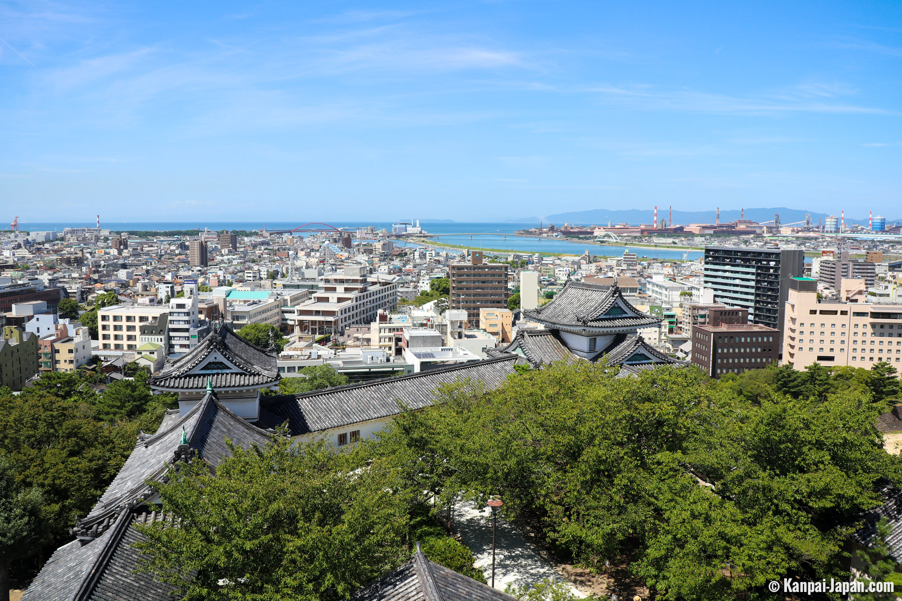

Kansai
×

•Kansai, also known as the Kinki region is located in the south central region of the main island
of Honshu, about 400 km (250 miles) west of the Kanto region.
•The Kansai region includes both the Japan Sea and Pacific Ocean coastal areas and the seven prefectures
of Hyogo, Kyoto, Mie, Nara, Osaka, Shiga and Wakayama.
•The Kansai area has very different climates and landscapes. The weather on the Japan Sea coast is
cooler than the hot southern Pacific coast around Osaka and Kyoto in summer with heavy snow along
the north coast in winter.•
The Kii Peninsula (Wakayama, Nara, Osaka and Mie Prefectures) south east of
Osaka has higher mountains, onsen and lower temperatures in summer than the urban areas.